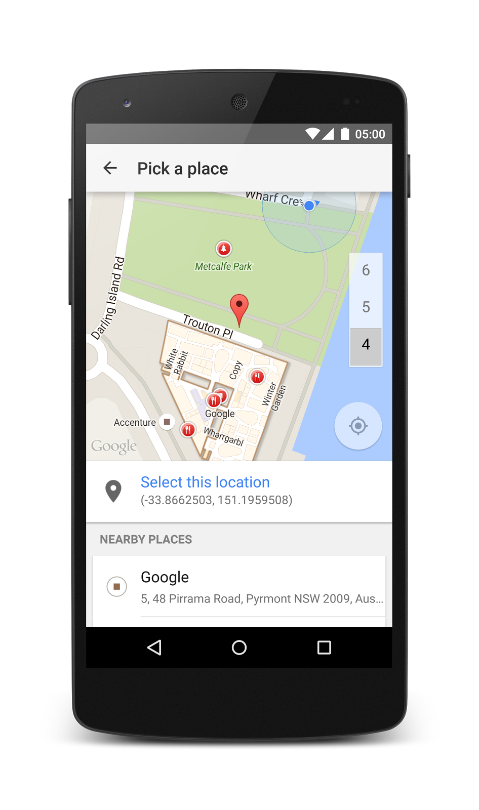
Check-In apps are so last year. In this code lab, we’ll build a simple Check-Out app to find the hottest places people are leaving. We’ll use the Google Places API for Android to manage nearby locations and we’ll use Firebase to store and synchronise data across devices in real time.
What you’ll learn
- How to build a simple Android app focused on a Google Map
- How to use the Google Places API for Android to help your users tell you where they really are
- How to use Firebase to store and stream data down to your apps in real time
What you’ll need
- Android Studio version 1.0+
- At least one Android phone or tablet device
How will you use this tutorial?
How would rate your experience with building Android apps?
Have you ever used the Google Places or Firebase APIs before?
Let’s create our new app from scratch.
1. Open Android Studio and choose New Project, either from the Quick Start dialog or from the File menu.
2. Name your application Check Out and enter google.io as your company domain. Leave the Project Location un-touched. Click Next.
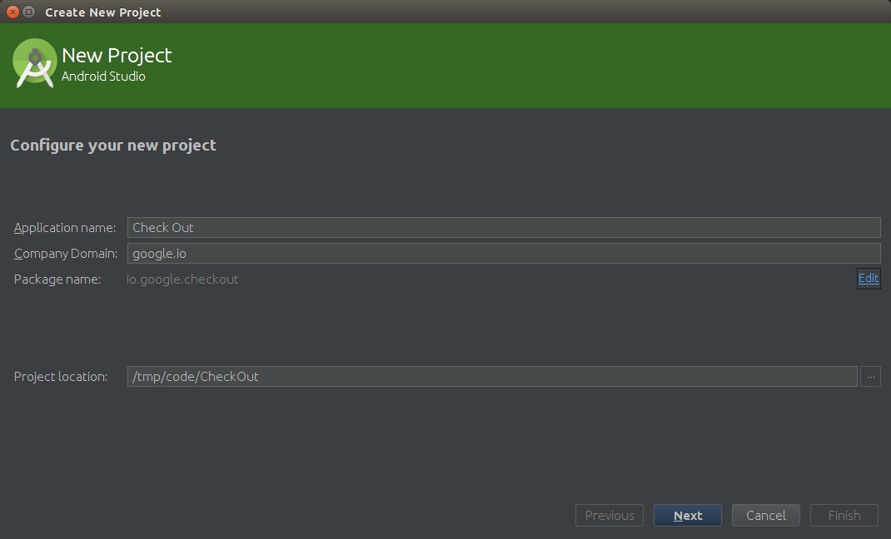
3. We’ll leave the default settings for device targets, that is just Phone and Tablet with a Minimum SDK of API 19 (KitKat). Click Next.
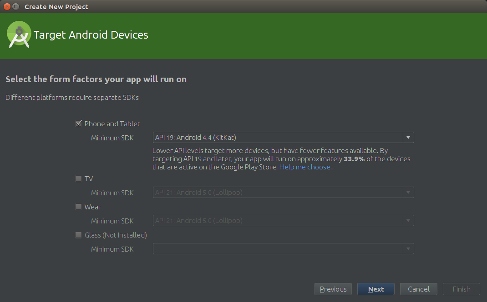
4. Our app will be driven by a map, so on the activity selection screen, choose Google Maps Activity and click Next.
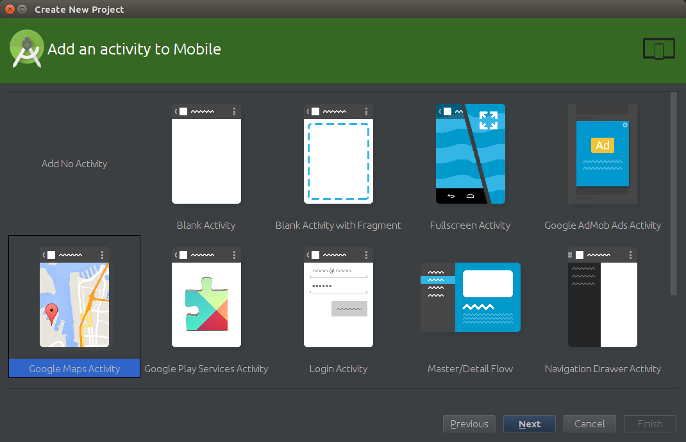
5. Set the title to Check Outs! and leave the rest of the settings as they are. Click Finish.
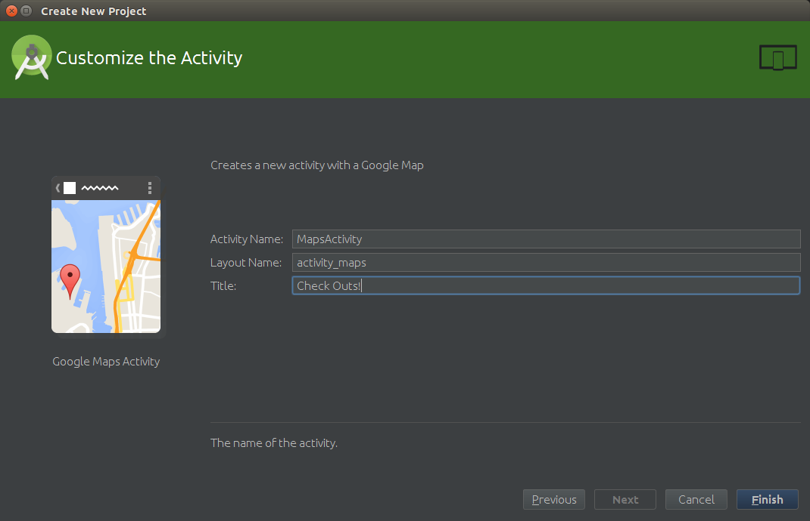
6. Wait for the initial build to complete. This is where Android Studio downloads the dependencies and performs an initial compilation so that you can get started straight away.
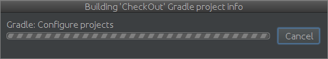
Before we can start using the Places API, we need to get an API key and set the key up in our app.
When Android Studio finished setting up your project, it should have opened a file with some instructions. We’re going to follow those instructions.
1. If it’s not already open in front of you, open google_maps_api.xml. It will be in the project under  app/res/values.
app/res/values.
2. The contents will look something like this.
google_maps_api.xml
3. In the comment, there is a link you need to copy and paste into your browser. Log in if you are prompted.
4. Follow the prompts on the page to create a new project or re-use one you’ve already set up.
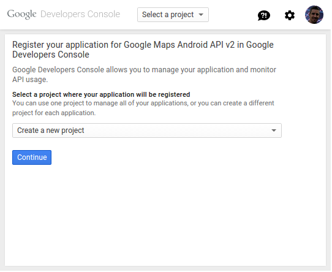
5. When prompted to “Create an Android key and configure allowed Android applications” you should see that the box is already pre-filled with the information listed in google_maps_api.xml. Just click Create.
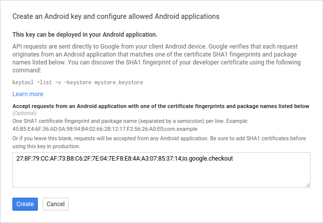
6. Now select APIs from the left-hand navigation (underneath APIs & auth).
7. On the APIs page, click on the Google Places API for Android link. It will be under the Google Maps APIs.
8. Now click Enable API. You’re now ready to use the API!
9. To get the API key we need, click on the Credentials link on the left-hand navigation.
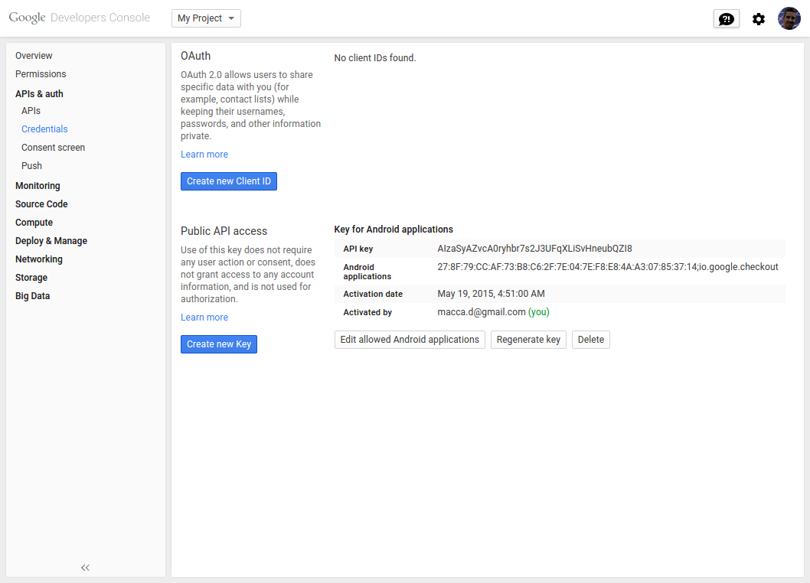
10. Copy the text next to API key (it will be a long string starting with AIza…), head back into Android Studio and replace the text YOUR_KEY_HERE with the key you just copied.
11. One last step! Open up AndroidManifest.xml in Android Studio (it will be under app/manifests) and find this code:
AndroidManifest.xml
And replace it with this code:
AndroidManifest.xml
This uses the new name for the key, so that the Places API can find it.
Firebase is an “Instant Data API” that we’ll be using to get real-time data updates in our app.
1. Load up https://www.firebase.com/signup/ in your web browser
2. Enter your email, create a super-secret password and click Create My Account.
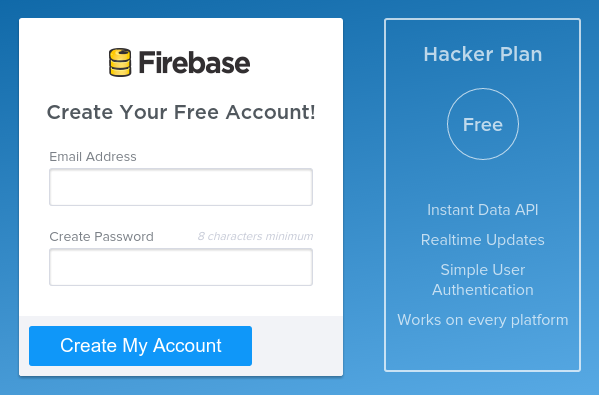
3. On the welcome page, find the My First App dialog. You will want to take note of your Firebase URL, it’s the text that ends in .firebaseIO.com.
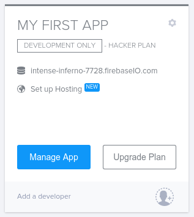
Before we make any changes, let’s run the app as it is.
1. Ensure your device is plugged into your machine’s USB port.
a. If you’re here at Google I/O, then your machine and device should be set up and ready to go, if not then you can follow the instructions on setting up your device for debugging.
2. In Android Studio, press the  Run button and wait for the project to build.
Run button and wait for the project to build.
3. Select your device from the list and click OK.
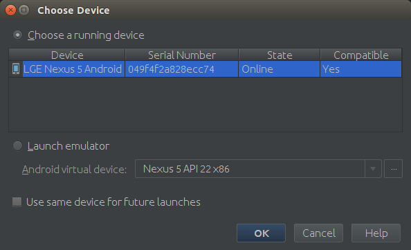
4. Check out the map on your device!
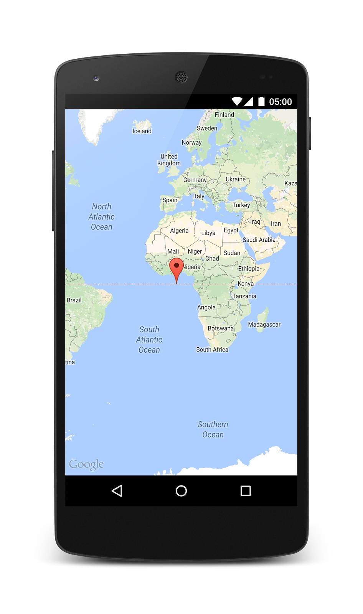
Let’s add the Check Out button to our app, even though it won’t do much yet.
1. We’ll add the button first. Open up the layout file for the app, activity_maps.xml, found under app/res/layout.
2. To make the button appear on top of the map, we’ll wrap everything in a FrameLayout and insert a <Button> above the <fragment> holding the map. Replace the contents of the whole file with this code. Note that the button has an onClick attribute - we’ll define that function in a few steps.
activity_maps.xml
3. Android Studio will complain that the button text @string/check_out is not defined. Fix the error by clicking on the error and pausing for a second, a red bulb should appear in the left gutter , click it and choose Create string value resource ‘check_out’.
4. Set the resource value to Check Out! (this will be the text on our button) and click OK.
We’ll add a few subtle but nice visual effects to our map: some padding so that the button can “float” over the map, a blue dot indicating the user’s location and we’ll zoom the map to the user’s location.
1. Open the MapsActivity class (found in app/java/io/google/checkout)
2. We’re going to use the new getMapAsync(..) method in the Android Maps API, so let’s replace MapsActivity completely. Paste this code into the file, overwriting the entire contents.
MapsActivity.java
3. To set the padding on the top of the map to make room for the button, add the following code to the onMapReady method. This will ensure that we set the padding correctly once the button has been drawn on-screen, as the map may be ready before the button is drawn.
MapsActivity.java
4. To make sure everything we’ve drawn on the map is visible, we’ll use a LatLngBounds Builder and a helper method to update it and animate the camera when we get new points.
a. Add this line at the top, under the private GoogleMap mMap line.
MapsActivity.java
b. Now add this helper method in the class:
MapsActivity.java
c. Now we can add this code to onMapReady to enable the user’s location and update the viewport when we have a GPS lock.
MapsActivity.java
5. Now is a good time to hit the Run button and see how the app looks on your phone.
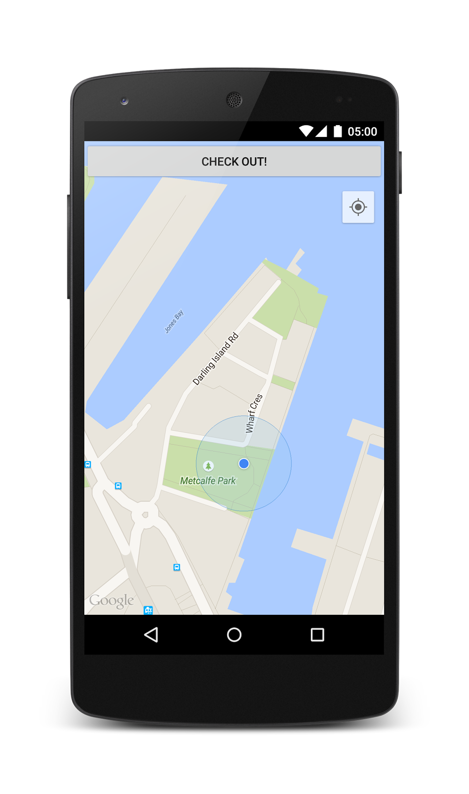
Now let’s wire up the button to the Place Picker!
1. The Places API uses the GoogleApiClient in Google Play Services to manage API connections, so we’ll need to set that up.
a. Add this field at the top of the file, below private GoogleMap mMap.
MapsActivity.java
b. And add this code in your onCreate() method.
MapsActivity.java
2. Recall that in our layout, we set the button’s on-click handler to be a method called checkOut. Let’s write that now.
a. We want to fire an intent and receive a result, so we’ll need a result code. Insert this constant declaration with the other fields at the top of the file (e.g. above private GoogleMap mMap)
MapsActivity.java
b. Here’s the code for checkOut(). It creates an intent using PlacePicker.IntentBuilder, starts it and handles two important exceptions that users may encounter. Note that the GooglePlayServicesRepairableException is recoverable, so we attempt to do so.
MapsActivity.java
3. Once the user has chosen a place, onActivityResult will be called, so we need to implement that now. This code checks that the intent was successful and uses PlacePicker.getPlace() to obtain the chosen Place.
MapsActivity.java
4. Now press the Run button and when the app loads, tap the Check Out button to use the Place Picker. It won’t do anything with the result yet, but we’ll fix that next.
While the Place Picker is beautiful, this app doesn’t do much. We need to add storage!
1. First add the dependency on Firebase to the app’s build.gradle file.
a. Add the final compile line from the snippet below to your app module’s build.gradle file (not the CheckOut project’s build.gradle).
build.gradle
b. Add this block to the same file, within the android { .. } block.
build.gradle
c. Click the  Gradle sync button to download the Firebase library to your local project.
Gradle sync button to download the Firebase library to your local project.
2. Make sure you have your Firebase URL that we set up in the Enable Firebase step. We need to add it as a constant (e.g. below private static final int REQUEST_PLACE_PICKER = 1).
a. Paste in the snippet below and replace the value of FIREBASE_URL with your Firebase URL. i.e. the code below would be correct if your URL was https://ferg-burger-420.firebaseio.com/
b. In order to keep our check-out properly separated from any other data we might store later, we will store everything under a single node, that we’re arbitrarily calling checkouts.
MapsActivity.java
c. Add a class member to hold the reference to our Firebase connection, like so. Once again, put this with the other members (e.g. private GoogleMap mMap).
MapsActivity.java
3. When our Activity is created, we need to open our connection to Firebase. Add the connection code in the onCreate method. Here we are also setting up a ChildEventListener to capture incoming data events.
MapsActivity.java
4. To write the selected places to Firebase, we need to modify onActivityResult to create the database entry when it retrieves the Place. The complete method should look like this.
a. This creates or updates a record in Firebase with a key matching the Place ID and with a value of { time: 14024376459 }, where the timestamp is set to the server’s current time.
MapsActivity.java
5. To handle data changes, we need to implement the missing ChildEventListener methods.
a. Add ChildEventListener to the list of interfaces that the MapsActivity class implements.
MapsActivity.java
b. Android Studio will indicate that there’s an error here, press Alt-Enter, choose Implement methods and click OK.
c. For now we are only interested in data being added to our map (that is, when a new CheckOut occurs). In the onChildAdded method, we want to look up the Place ID and add a marker to the map.
MapsActivity.java
6. Now press the Run button and once the app has loaded:
a. Tap the Check Out button to use the Place Picker.
b. Choose a place nearby.
c. Watch in awe as the place is added to your map!
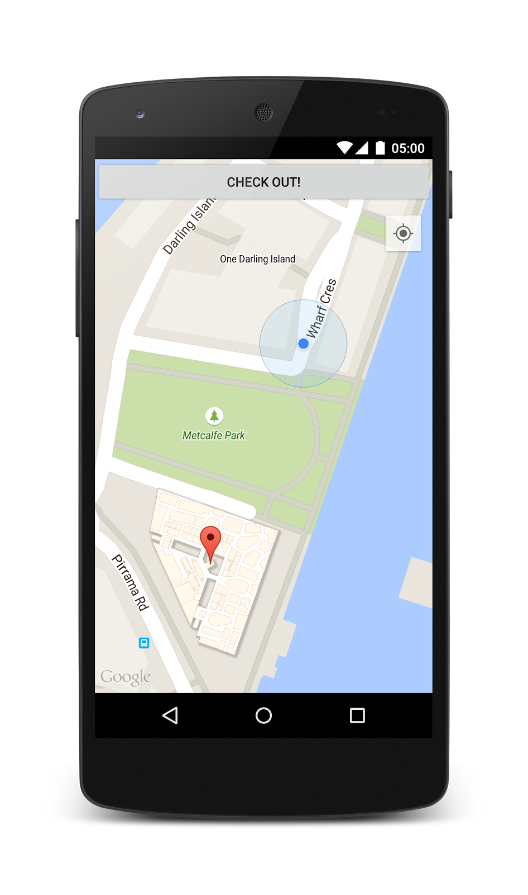
For this step you will need a second device. Plug it into your machine and press the Run button, installing the app to the new device.
Make sure you can see both devices - this is important!
1. On one device, make sure the map is visible.
2. On the other device, tap Check Out and choose a place.
3. Watch the devices to see how both screens update simultaneously with the new data!
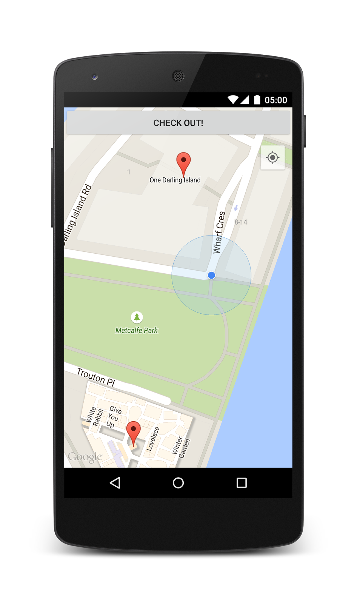
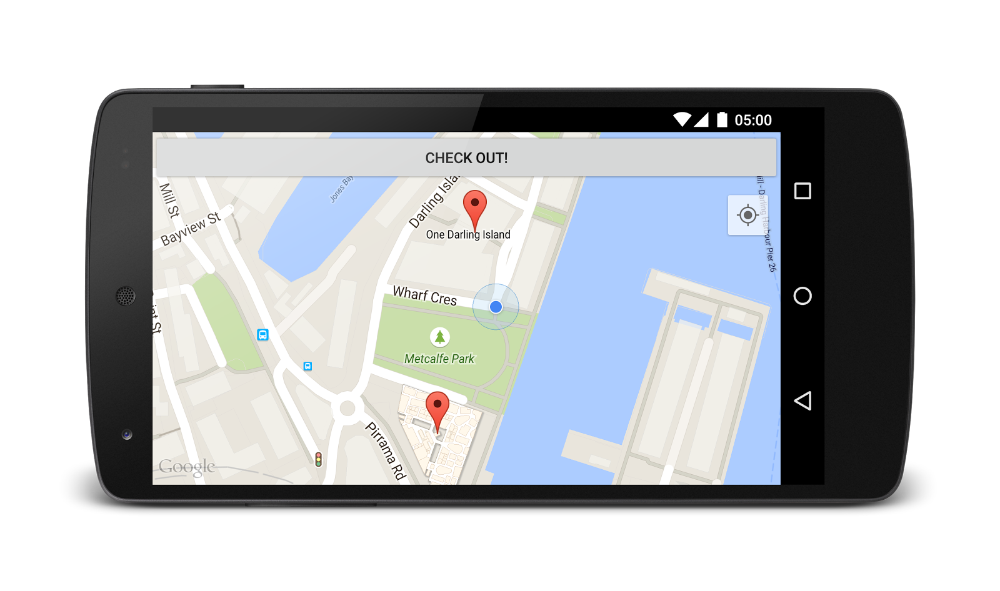
You now have a technical skeleton for a hot new Check Out app. Now add some more user-focused features and hunt down some VC funding!
What we've covered
- Using the Android Place Picker to add real place data
- Looking up Place IDs using getPlaceById
- Writing data to Firebase
- Streaming data-creation events from Firebase to your apps
Next Steps
- Try animating the markers when they appear.
- Wouldn’t it be more interesting to find out why people are leaving? Add more data to your check-outs, like a rating and comment. Display it in an InfoWindow.
- Right now we’re monitoring all data coming from Firebase, try restricting the data to just check-outs in the last hour. Hint: Make sure you’re removing markers from the map when they expire, with onChildRemoved.
- Try limiting the data being displayed to just the currently viewed map. Hint: you might like to use GeoFire.
- Get VC funding!
- Read the Android Maps API developer documentation
- Read the Firebase Android API
- Watch these videos:
Going Places on Android
Google Play Services 7.0